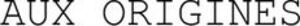

Trade Mark Journal No.2026/005 30 January 2026
WO0000001896287 (3,4,5,14,21,29,30,31,32,33,43)
Office of origin: France
Date of International Registration:2 December 2025
Date of designation in the UK:
2 December 2025

International priority date claimed: 19 November 2025
(France)
(5200477)
- Class 3
- Laundry preparations; cleaning preparations; polishing preparations; degreasing preparations; abrasive preparations; soaps; perfumes; essential oils; cosmetics; lotions for hair; dentifrices; depilatories; make-up removing products; lipstick; beauty masks; shaving products; preservatives for leather (polishes); creams for leather.
- Class 4
- Industrial oils; industrial greases; lubricants; dust absorbing, wetting and binding compositions; fuel; lighting fuel; candles for lighting; wicks for lighting; firewood; gas for lighting.
- Class 5
- Pharmaceutical products; veterinary products; hygienic products for medicine; disinfectant soaps; medicinal soaps; medicated shampoos; medicated dentifrices; dietetic foods for medical use; dietetic foodstuffs for veterinary use; food for babies; food supplements; medical dressings; teeth filling materials; dental impression materials; disinfectants; antibacterial handwashes; preparations for destroying vermin; fungicides; herbicides; sanitary panties; sanitary towels; chemical preparations for medical use; chemical preparations for pharmaceutical use; medicinal herbs; medicinal herbal teas; parasiticides; alloys of precious metals for dental use.
- Class 14
- Jewelry ("joaillerie"); jewelry; precious stones; timepieces and chronometric instruments; precious metals and alloys thereof; works of art of precious metal; jewelry boxes; boxes of precious metal; watch cases; watch bands; watch chains; watch springs; watch glasses; key rings (split rings with trinket or decorative fob); statues of precious metal; figurines (statuettes) of precious metal; presentation cases for timepieces; medals.
- Class 21
- Utensils for household use; kitchen utensils; containers for household use; kitchen containers; combs; sponges; brushes (except paintbrushes); hand-operated cleaning instruments; steel wool for household use; unworked or semi-worked glass, except building glass; porcelain ware; earthenware; bottles; art objects made of porcelain, ceramic, earthenware, terracotta or glass; statues of porcelain, ceramic, earthenware, terracotta or glass; figurines (statuettes) of porcelain, ceramic, earthenware, terracotta or glass; toilet cases; trash cans for household use; glasses (receptacles); tableware.
- Class 29
- Meat; fish; poultry; game; preserved fruit; frozen fruits; dry fruits; cooked fruits; preserved vegetables; deep-frozen vegetables; dried vegetables; cooked vegetables; jellies for food other than confectionery; jams; compotes; eggs; milk; dairy products; oils for food; butter; charcuterie; salted meats; crustaceans, not live; shellfish, not live; edible insects, not live; canned meat; canned fish; cheeses; milk beverages with milk predominating.
- Class 30
- Coffee; tea; cocoa; sugar; rice; tapioca; flour; cereal preparations; bread; pastries; confectionery products; edible ices; honey; agave syrup (natural sweetener); yeast; salt; mustard; vinegar; sauces (condiments); spices; ice for refreshment; sandwiches; pizzas; pancakes; cookies (biscuits); cakes; rusks; sugar confectionery; chocolate; cocoa-based beverages; coffee-based beverages; tea-based beverages.
- Class 31
- Unprocessed and non-transformed agricultural products; raw and unprocessed aquaculture products; raw and unprocessed horticultural products; raw and unprocessed forestry products; live animals; fresh fruits; fresh vegetables; grains and seeds for planting; natural plants; natural flowers; animal foodstuffs; malt; natural turf; live crustaceans; live shellfish; live edible insects; live bait for fishing; unprocessed cereal grains; seedlings; trees (plants); unsawn timber; fodder.
- Class 32
- Beers; alcohol-free beverages; mineral waters (beverages); carbonated waters; fruit-based beverages; fruit juices; syrups for beverages; preparations for making non-alcoholic beverages; lemonades; fruit nectars; soda water; non-alcoholic aperitifs.
- Class 33
- Alcoholic beverages (with the exception of beers); wines; wines with protected designation of origin; wines with protected geographical indication.
- Class 43
- Services for providing food and beverages; temporary accommodation; bar services; catering services; hotel accommodation services; temporary accommodation reservation; day-care centers; providing campground facilities; retirement home services; pet boarding services.
Fondation François Schneider